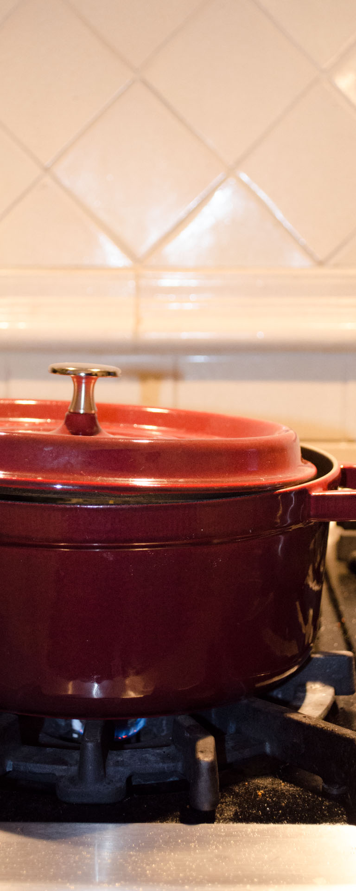

Benjamin W. Herila

Someone recently asked me... What does every kitchen need?
Pots & Pans
3 quart saucepan (I've inherited my great-grandmothers old Revere ware)
3 quart saute pan with lid (My favorite is All Clad)
12 quart stainless steel stock pot/soup pot with tight-fitting lid
At least one more big pot - like an 8 quart stock or soup pot.
At least one more small pot- like a 1 quart pot for making sauces in. Copper bottom or copper core is really nice here for even heat distribution when making fussy sauces.
Cast iron skillet with tight-fitting lid (I have a Lodge skillet)
4-6 qt. enamed cast iron dutch oven with tight fitting lid (I have a 4-qt. Staub)
2 or 3 (or more) baking sheets. Get the nice big aluminum ones, and don't put them (or anything else made of aluminum) in the dishwasher.
Two 9x12 glass baking dishes. Pyrex is good, but so is IKEA :-)
One smaller glass baking dish- like a 9x9 maybe.
Pie pan.
9x3-inch aluminum cheesecake pan. NOT spring-form; removable bottom. I have a magic line.
Bread pan.
Cupcake molds. Nonstick is a clear winner here.
Measuring and Mixing
Stainless steel measuring spoon
Dry measures (1/4 C to 1 C)
Two 2-Cup liquid measures
3 mixing bowls of various sizes. Bonus points if they nest.
Colander
Immersion blender
Hand mixer
Utensils
A good chef's knife. If you know how to chop, get a chef's knife without a heel. I absolutely love my Shun classic 9" chefs knife. And maybe get a honing steel to keep it in good shape.
At least TWO metal spatula/flippers
One or two good sturdy hardwood wooden spoons (not one of those cheapo pinewood-derby ones that will fall apart after just a few weeks of good use)
Ladle (two, to be on the safe side). When I make a pot of soup, I leave the ladle in the pot in the refrigerator and it's nice to have a second one in the meantime.
Bread knife (don't spend too much on this one)
Paring knife (may or may not be worth investing in quality here, depending on your cooking style and preferences)
Rubber or silicone spatula/scraper
Other items
A nice big cutting board, 18x24 inches would be very nice. Invest in quality here, i.e J.K. Adams, which are made in Vermont and are made of very sturdy hardwoods. There's nothing worse than a cheapo cutting board that ends up warping and then won't sit flat anymore.
Can opener
Pizza slicer
Ice cream scoop
Instant read thermometer. Make sure you get a good one that is actually instant, not "30-seconds instant."
